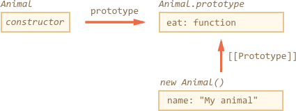

Class
In object-oriented programming, a class is an extensible program-code-template for creating objects, providing initial values for state (member variables) and implementations of behavior (member functions or methods). - Wikipedia
There’s a special syntax construct and a keyword class in JavaScript. But before studying it, we should consider that the term “class” comes from the theory of object-oriented programming. The definition is cited above, and it’s language-independent.
In JavaScript there are several well-known programming patterns to make classes even without using the class keyword. And here we’ll talk about them first.
Functional class pattern
The constructor function below can be considered a “class” according to the definition:
function User(name) {
this.sayHi = function() {
alert(name);
};
}
let user = new User("John");
user.sayHi(); // John
It follows all parts of the definition:
- It is a “program-code-template” for creating objects (callable with
new). - It provides initial values for the state (name from parameters).
- It provides methods (
sayHi).
This is called functional class pattern.
In the functional class pattern, local variables and nested functions inside User, that are not assigned to this, are visible from inside, but not accessible by the outer code.
function User(name, birthday) {
// only visible from other methods inside User
function calcAge() {
return new Date().getFullYear() - birthday.getFullYear();
}
this.sayHi = function() {
alert(`${name}, age:${calcAge()}`);
};
}
let user = new User("John", new Date(2000, 0, 1));
user.sayHi(); // John, age:17
user.calcAge(); // Error
calcAge(); // Error
In this code variables name, birthday and the function calcAge() are internal, private to the object. They are only visible from inside of it.
On the other hand, sayHi is the external, public method. The external code that creates user can access it. This way we can hide internal implementation details and helper methods from the outer code. Only what’s assigned to this becomes visible outside.
Factory class pattern
We can create a class without using new at all.
function User(name, birthday) {
// only visible from other methods inside User
function calcAge() {
return new Date().getFullYear() - birthday.getFullYear();
}
return {
sayHi() {
alert(`${name}, age:${calcAge()}`);
}
};
}
let user = User("John", new Date(2000, 0, 1));
user.sayHi(); // John, age:17
As we can see, the function User returns an object with public properties and methods. The only benefit of this class pattern is that we can omit new: write let user = User(...) instead of let user = new User(...). In other aspects it’s almost the same as the functional pattern.
Prototype-based classes
Prototype-based classes are the most important and generally the best. Functional and factory class patterns are rarely used in practice. Soon you’ll see why. Here’s the same class rewritten using prototypes:
function User(name, birthday) {
this._name = name;
this._birthday = birthday;
}
User.prototype._calcAge = function() {
return new Date().getFullYear() - this._birthday.getFullYear();
};
User.prototype.sayHi = function() {
alert(`${this._name}, age:${this._calcAge()}`);
};
let user = new User("John", new Date(2000, 0, 1));
user.sayHi(); // John, age:17
The code structure:
- The constructor
Useronly initializes the current object state. - Methods are added to
User.prototype.
Here are the advantages over the functional pattern:
- In the functional pattern, each object has its own copy of every method. We assign a separate copy of
this.sayHi = function() {...}and other methods in the constructor. - In the prototypal pattern, all methods are in
User.prototypethat is shared between alluserobjects. An object itself only stores the data.
So the prototypal pattern is more memory-efficient.
Prototype-based inheritance for classes
Let’s say we have two prototype-based classes.
function Rabbit(name) {
this.name = name;
}
Rabbit.prototype.jump = function() {
alert(`${this.name} jumps!`);
};
let rabbit = new Rabbit("My rabbit");

…And Animal:
function Animal(name) {
this.name = name;
}
Animal.prototype.eat = function() {
alert(`${this.name} eats.`);
};
let animal = new Animal("My animal");

Right now they are fully independent. But we’d want to extend . In other words, rabbits should be based on animals, have access to methods of Animal and extend them with its own methods.
Right now methods for rabbit objects are in Rabbit.prototype. We’d like rabbit to use Animal.prototype as a “fallback”, if the method is not found in Rabbit.prototype.
So the prototype chain should be rabbit → Rabbit.prototype → Animal.prototype.

The code to implement that:
// Same Animal as before
function Animal(name) {
this.name = name;
}
// All animals can eat, right?
Animal.prototype.eat = function() {
alert(`${this.name} eats.`);
};
// Same Rabbit as before
function Rabbit(name) {
this.name = name;
}
Rabbit.prototype.jump = function() {
alert(`${this.name} jumps!`);
};
// setup the inheritance chain
Rabbit.prototype.__proto__ = Animal.prototype; // (*)
let rabbit = new Rabbit("White Rabbit");
rabbit.eat(); // rabbits can eat too
rabbit.jump();
The line (*) sets up the prototype chain. So that rabbit first searches methods in Rabbit.prototype, then Animal.prototype. And then, just for completeness, let’s mention that if the method is not found in Animal.prototype, then the search continues in Object.prototype, because Animal.prototype is a regular plain object, so it inherits from it.
So here’s the full picture:

Classes
The “class” construct allows to define prototype-based classes with a clean, nice-looking syntax.
Here’s a prototype-based class User:
function User(name) {
this.name = name;
}
User.prototype.sayHi = function() {
alert(this.name);
}
let user = new User("John");
user.sayHi();
…And that’s the same using class syntax:
class User {
constructor(name) {
this.name = name;
}
sayHi() {
alert(this.name);
}
}
let user = new User("John");
user.sayHi();
It’s easy to see that the two examples are alike. Just please note that methods in a class do not have a comma between them. Novice developers sometimes forget it and put a comma between class methods, and things don’t work. That’s not a literal object, but a class syntax.
So, what exactly does class do? We may think that it defines a new language-level entity, but that would be wrong.
The class User {...} here actually does two things:
- Declares a variable User that references the function named "constructor".
- Puts methods listed in the definition into
User.prototype. Here, it includessayHiand the constructor.
Here’s the code to dig into the class and see that:
class User {
constructor(name) { this.name = name; }
sayHi() { alert(this.name); }
}
// proof: User is the "constructor" function
alert(User === User.prototype.constructor); // true
// proof: there are two methods in its "prototype"
alert(Object.getOwnPropertyNames(User.prototype)); // constructor, sayHi
Here’s the illustration of what class User creates:

So class is a special syntax to define a constructor together with its prototype methods. …But not only that. There are minor tweaks here and there:
Constructors require new
Unlike a regular function, a class constructor can’t be called without new:
class User {
constructor() {}
}
alert(typeof User); // function
User(); // Error: Class constructor User cannot be invoked without 'new'
Different string output
If we output it like alert(User), some engines show "class User...", while others show "function User...".
Please don’t be confused: the string representation may vary, but that’s still a function, there is no separate “class” entity in JavaScript language.
Class methods are non-enumerable
A class definition sets enumerable flag to false for all methods in the "prototype". That’s good, because if we for..in over an object, we usually don’t want its class methods.
Classes have a default constructor() {}
If there’s no constructor in the class construct, then an empty function is generated, same as if we had written constructor() {}.
Classes always use strict
All code inside the class construct is automatically in strict mode.
Getters/setters
Classes may also include getters/setters. Here’s an example with user.name implemented using them:
class User {
constructor(name) {
// invokes the setter
this.name = name;
}
get name() {
return this._name;
}
set name(value) {
if (value.length < 4) {
alert("Name is too short.");
return;
}
this._name = value;
}
}
let user = new User("John");
alert(user.name); // John
user = new User(""); // Name too short.
Internally, getters and setters are also created on the User prototype, like this:
Object.defineProperties(User.prototype, {
name: {
get() {
return this._name
},
set(name) {
// ...
}
}
});
Only methods
Unlike object literals, no property:value assignments are allowed inside class. There may be only methods and getters/setters. There is some work going on in the specification to lift that limitation, but it’s not yet there.
If we really need to put a non-function value into the prototype, then we can alter prototype manually, like this:
class User { }
User.prototype.test = 5;
alert( new User().test ); // 5
So, technically that’s possible, but we should know why we’re doing it. Such properties will be shared among all objects of the class. An “in-class” alternative is to use a getter:
class User {
get test() {
return 5;
}
}
alert( new User().test ); // 5
From the external code, the usage is the same. But the getter variant is a bit slower.
Class Expression
Just like functions, classes can be defined inside another expression, passed around, returned etc. Here’s a class-returning function (“class factory”):
function makeClass(phrase) {
// declare a class and return it
return class {
sayHi() {
alert(phrase);
};
};
}
let User = makeClass("Hello");
new User().sayHi(); // Hello
That’s quite normal if we recall that class is just a special form of a function-with-prototype definition. And, like Named Function Expressions, such classes also may have a name, that is visible inside that class only:
// "Named Class Expression" (alas, no such term, but that's what's going on)
let User = class MyClass {
sayHi() {
alert(MyClass); // MyClass is visible only inside the class
}
};
new User().sayHi(); // works, shows MyClass definition
alert(MyClass); // error, MyClass not visible outside of the class
Static methods
We can also assign methods to the class function, not to its "prototype". Such methods are called static.
class User {
static staticMethod() {
alert(this === User);
}
}
User.staticMethod(); // true
That actually does the same as assigning it as a function property:
function User() { }
User.staticMethod = function() {
alert(this === User);
};
The value of this inside User.staticMethod() is the class constructor User itself (the “object before dot” rule). Usually, static methods are used to implement functions that belong to the class, but not to any particular object of it. For instance, we have Article objects and need a function to compare them. The natural choice would be Article.compare, like this:
class Article {
constructor(title, date) {
this.title = title;
this.date = date;
}
static compare(articleA, articleB) {
return articleA.date - articleB.date;
}
}
// usage
let articles = [
new Article("Mind", new Date(2016, 1, 1)),
new Article("Body", new Date(2016, 0, 1)),
new Article("JavaScript", new Date(2016, 11, 1))
];
articles.sort(Article.compare);
alert( articles[0].title ); // Body
Here Article.compare stands “over” the articles, as a means to compare them. It’s not a method of an article, but rather of the whole class.
Here Article.compare stands “over” the articles, as a means to compare them. It’s not a method of an article, but rather of the whole class. Another example would be a so-called “factory” method. Imagine, we need few ways to create an article:
- Create by given parameters (
title,dateetc). - Create an empty article with today’s date.
- ...
The first way can be implemented by the constructor. And for the second one we can make a static method of the class.
class Article {
constructor(title, date) {
this.title = title;
this.date = date;
}
static createTodays() {
// remember, this = Article
return new this("Today's digest", new Date());
}
}
let article = Article.createTodays();
alert( article.title ); // Todays digest
Now every time we need to create a today’s digest, we can call Article.createTodays(). Once again, that’s not a method of an article, but a method of the whole class.
Static methods are also used in database-related classes to search/save/remove entries from the database, like this:
// assuming Article is a special class for managing articles
// static method to remove the article:
Article.remove({id: 12345});
Prototype Relation
class User{
constructor(name, age){
this.name = name;
this.age = age;
this.city = "";
}
getUserDetails(){return "Name = " + this.name + ", Age = " + this.age;}
get location(){return this.city;}
set location(city){this.city = city;}
static getOlder(person1, person2){
if(person1.age > person2.age){
return person1.name + " is Older than " + person2.name;
}else{
return person2.name + " is Older than " + person1.name;
}
}
}
console.log(Object.getOwnPropertyNames(User)); // [ "length", "name", "prototype", "getOlder" ]
console.log(Object.getOwnPropertyNames(User.prototype)); // [ "constructor", "getUserDetails", "location" ]
console.log(User.prototype.__proto__ == Object.prototype); // true
let santanu = new User("Santanu Bera", 28);
console.log(santanu.__proto__ == User.prototype); // true
console.log(santanu.__proto__.__proto__ == Object.prototype); // true